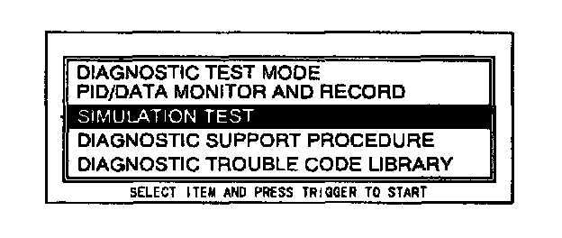
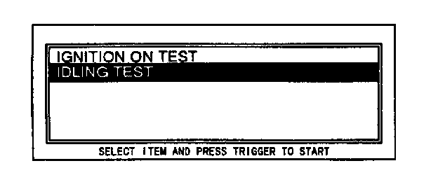
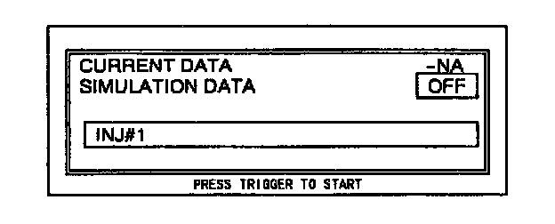
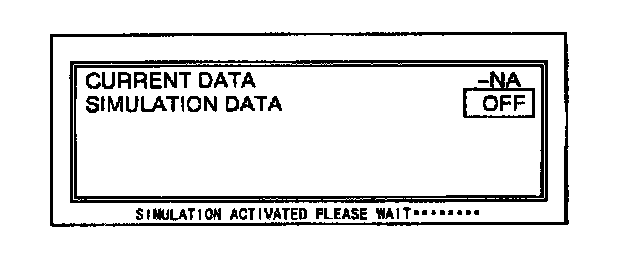

Idling Test
1. Perform the NGS tester hook-up procedure.2. Perform steps 1 through 8 from the DTCs Reading Procedure.
3. Start the engine and run it at idle.

4. Move the cursor to SIMULATION TEST. Press the trigger key to enter this selection.

5. Move the cursor to IDLING TEST. Press the trigger key to enter this selection.

6. The screen will display PIDs. Select the appropriate PID for testing, then press the trigger.
NOTE:
- Only one PID can be selected at a time.

7. Press START.
NOTE:
If the screen displays "TEST CONDITION NOT CORRECT", check the following three signal conditions and determine whether or not they are normal:
1. Idle SW: ON (Equipped vehicles)
2. TR SW:P or N
3. RPM:above 550
8. Press trigger key.

9. The simulation is performed for 3 seconds, and a "SIMULATION ACTIVATED PLEASE WAIT" message is displayed during those 3 seconds.
10. To perform the simulation again, press the trigger key. To exit the idling test, press the cancel key.